实验03：调试（第二部分）
常见问题
实验03的常见问题在 这里 。
简介
这是上周调试工作的延续。在本周的实验中，我们将使用上周学到的调试工具，并获得更多调试练习。今天实验的目标是学习更多关于以下内容：
- 阅读堆栈跟踪并从中隔离bug。
- 了解我们可能遇到的不同类型的异常。
- 更熟练地使用IntelliJ调试器。
- 异常断点、表达式和监视（可选）。
和往常一样，如果你不确定某是什么意思，不要犹豫去查阅，特别是当堆栈跟踪中出现特定异常或错误时（我们将在今天的实验中介绍）。提示旨在引导你的思考，但我们鼓励你先尝试自己完成实验，然后再打开提示。
冒险游戏
运行游戏和测试
你要做的第一件事是运行
AdventureGame
中的
main
方法来运行游戏。运行游戏后，按照给出的说明操作。这会让你了解你要调试的程序应该做什么（如果你遇到错误，这是正常的）。
然后，在你运行游戏之后，运行
tests/adventure/AdventureGameTests
中的测试。它们应该在
BeeCountingStage
上失败，这将引导你调试下面的第一个错误（请注意，此时所有测试都会失败）。要通过整个
AdventureGameTests
，你需要修复所有单独的阶段测试（修复一个阶段将显示你通过了该单独阶段）。
这些阶段是按规格说明的顺序完成的。
我们鼓励你在完成每个阶段时都运行冒险游戏，看看它们是如何与游戏相关联的。别忘了经常提交以保存你的进度！
阅读堆栈跟踪
当Java中发生
运行时错误
时，堆栈跟踪会被打印到控制台，以提供有关错误发生位置以及程序到达该位置所采取的步骤的信息。当你第一次运行
Adventure
时，你的堆栈跟踪将类似于下图：
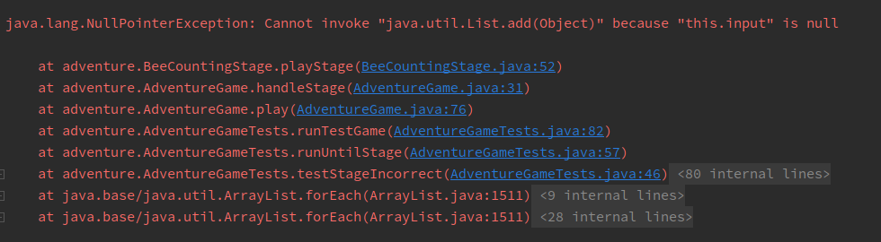
首先要注意的是发生了什么类型的错误；这显示在堆栈跟踪的第一行。在这种情况下，我们的代码抛出了
NullPointerException
。
对于某些异常，包括
NullPointerException
，Java会给你一个解释。这里，
this.input
是
null
，所以我们不能对它调用方法。
它下面的行代表程序到达错误所经历的方法调用序列：列表中的第一行是错误发生的位置，它下面的行代表调用了抛出错误的方法的那行代码，依此类推。
你可以点击
蓝色文本
导航到该文件和行。
为了了解如何解释堆栈跟踪，你通常从顶部开始。如前所述，堆栈跟踪的第一行是发生错误的地方——换句话说，这是错误发生前执行的最后一个方法调用，所以你可以用它来隔离bug的位置。根据程序的编写方式、设计方式以及你编写/贡献的代码，你会导航到堆栈跟踪中相应的行，然后点击
蓝色文本
跳转到该行并开始调试。
对于以下每个阶段， 只更改必要的内容 ！你不应该重写整个代码块，除非另有说明。我们已经将我们更改的行数作为指导方针。
如果你愿意，你可以每次都运行冒险游戏来验证正确性，但你不必要——可以直接通过测试进行调试。对于你将使用的每个文件，它包含一个
playStage
方法，你可以在该方法中设置断点。从那里，你可以在
AdventureGameTests
中开始调试。
调试
BeeCountingStage
通过分析堆栈跟踪来修复
BeeCountingStage
中发生的
NullPointerException
。你可以忽略包含
<XX internal lines>
的行；这些来自测试框架或库代码，通常不会帮助你找到错误。
预期修改行数：1
提示1
错误发生在某一行并不一定意味着那段代码不正确——堆栈跟踪中未显示的内容可能是真正的罪魁祸首！
提示2
仔细看看构造函数。看看声明的变量以及实例化的内容。
看起来这不是
BeeCountingStage
中的唯一错误！
修复
BeeCountingStage
中发生的
IndexOutOfBoundsError
。
忽略堆栈跟踪顶部指向
Objects.java
和
ArrayList.java
的灰色链接。错误可能
发生
在不是你写的代码中，但根本原因可能是
你的代码
试图做的事情。
预期修改行数：1
提示1
别忘了，Java的索引是从0开始的！
调试
SpeciesListStage
修复
SpeciesListStage
中发生的错误。如果你看不到异常发生的方法内的具体问题（堆栈跟踪的第一行），通常查看第二行是个好主意，那里会显示方法被调用的位置和参数。
预期修改行数：3-4
提示1
考虑列表的可能性。代码是否考虑了所有情况？是否有代码未能处理的边缘情况？
阅读方法上方的javadoc注释也可能有助于获取更多关于方法功能的上下文。
调试
PalindromeStage
有时，IntelliJ会告诉你它认为有问题的事情。将鼠标悬停在有bug的方法中的黄色/橙色高亮处（在
PalindromeStage
的
digitsToIntList
方法中——你可以通过堆栈跟踪导航到它）。这能给你一些有用的信息吗？
使用此功能来解决
PalindromeStage
中的错误。
如果调试器感觉没有响应，通常是因为代码中某个地方有无限循环。如果你设置了一个断点但它从未被触发，那么你就知道在断点之前发生了无限循环！结合单步执行来隔离问题。
这部分有两个bug需要修复。先修复最明显的那个，然后尝试隔离并解决第二个。这部分实验的提示适用于需要解决的第二个bug。
预期修改行数：3
提示1（仅适用于第二个bug）
如果你还没有，请阅读上面的说明。查看调用
digitsToIntList
的方法。如果你设置了一个断点并运行调试器，我们是否会退出
while
循环？我们需要满足什么条件才能退出
while
循环？它被满足了吗？尝试结合Java可视化工具一起使用，以便你可以更仔细地检查可视化中的bug。
调试
MachineStage
MachineStage
中的
sumOfElementwiseMax
方法应该接收两个数组，计算这两个数组的逐元素最大值，然后对结果的最大值求和。例如，对于两个数组
{2, 0, 10, 14}
和
{-5, 5, 20, 30}
，逐元素最大值是
{2, 5, 20, 30}
。在第二个位置，
0
和
5
中较大的是
5
。这个逐元素最大值的和是 $2 + 5 + 20 + 30 = 57$。
有两种不同的bug使方法返回错误的结果。你可以假设
playStage
中的输入解析代码工作正常。
要找到bug，你不应该单步进入
mysteryMax
或
mysteryAdd
函数，甚至不应该尝试理解它们在做什么。也就是说，你应该使用
来
只查看结果
。这些是
神秘的
函数，是故意混淆的。如果你发现自己不小心单步进入了这两个函数之一，使用
按钮来逃脱。
即使不单步进入这些函数，你也应该能够判断它们是否有bug。这就是抽象的力量！即使我不知道鱼在分子水平上是如何工作的，在某些情况下我也能清楚地判断鱼是否死了。
修复这两个bug，使
sumOfElementwiseMax
返回正确的结果。如果你发现
mysteryMax
或
mysteryAdd
中有bug，完全重写该方法，而不是试图修复它。但是，不要不必要地重写代码——首先要确保它确实是坏的！
预期修改行数：2-5
提示
-
理解
sumOfElementwiseMax函数应该做什么。当你向游戏提供输入时，尝试用手或计算器计算答案。将你的计算与输出进行比较，你会看到输出是不正确的。 -
在调用
sumOfElementwiseMax的行上设置一个断点。当你运行调试器时，单步进入sumOfElementwiseMax，然后使用 查看对arrayMax调用的结果。arrayMax的输出是你期望的吗？ -
如果你认为那里有bug，应该单步进入
arrayMax。但是不要单步进入mysteryMax——只有当你认为它有bug时才完全重写它。 -
对
arraySum和mysteryAdd重复上述步骤。
另一个调试谜题？！[可选]
实验的其余部分是 可选的 。我们将介绍一些你可能会觉得有用的IntelliJ调试器的附加工具——异常断点以及表达式和监视。
不要修改
Puzzle.java
！
这些练习将涉及处理一些看起来相当神秘和不熟悉的代码。遵守抽象屏障，尝试在不必完全理解发生了什么的情况下找到答案！
异常断点
调试时，你有时可能会遇到意外错误，使你难以找出代码的问题所在。为了帮助解决这个问题，IntelliJ允许你在异常上设置断点。这些断点确保当你的代码抛出异常时，调试器将暂停执行，允许你检查程序的状态。
继续运行
Puzzle
类。你应该看到以下输出：
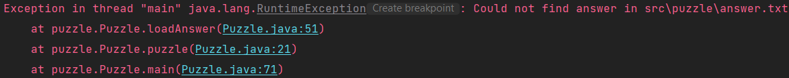
对于许多常见的异常，IntelliJ 会在控制台输出中显示一个"创建断点"按钮（在上面截图中
java.lang.RuntimeException
的右侧），这将允许你访问高级断点窗口。如果没有这个按钮，在任意一行创建一个断点（在下面的截图中，我们在第 23 行创建了一个断点），右键单击它，然后选择"更多"。
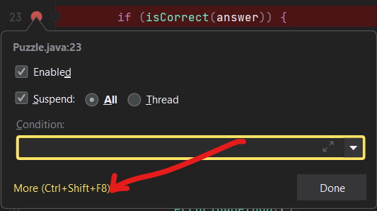
高级断点窗口应该类似于这样：
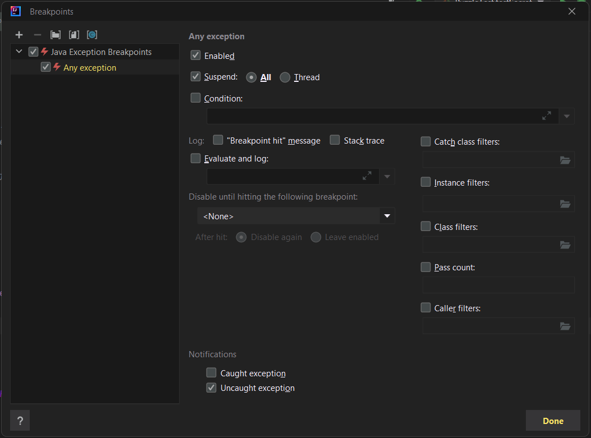
这里有很多内容，但你不需要理解大部分内容。点击左上角的加号符号，你应该会看到这样的弹窗：
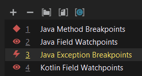
选择"Java异常断点"，然后会出现另一个窗口，你可以在这里指定我们想要暂停执行的异常类型。控制台告诉我们遇到了一个
java.lang.RuntimeException
，所以继续选择它。
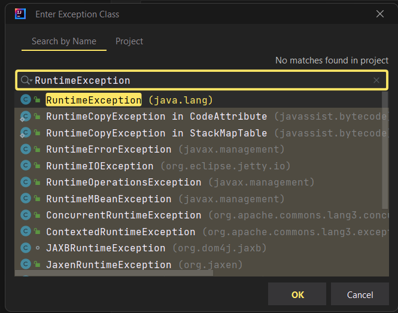
你现在应该看到原来的高级断点窗口，其中有一个新创建的异常断点，恰当地命名为'java.lang.RuntimeException'（如果你使用控制台的"创建断点"按钮访问该窗口，你可能会看到两个副本，这没关系）。
你可以选择在捕获的异常或未捕获的异常上中断，或者两者都选。这很有用，因为很多库代码会故意抛出和捕获很多异常，所以这允许我们在必要时专注于未处理的异常。现在，继续保持两个选项都勾选。
如果你在这一点调试程序，你的代码应该在第 53 行暂停，通常的红色圆圈位置会有一个小闪电符号。这表示断点是由异常触发的，而不是正常的断点。
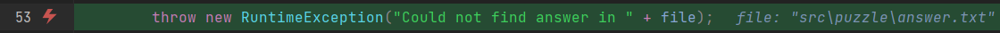
从中我们可以看出，IntelliJ暗示问题可能在
src/puzzle/answer.txt
中。通过检查该文件，查看
Puzzle.java
，以及使用你在实验02和本实验中学到的其他调试技术，你能弄清楚发生了什么吗？
修复
answer.txt
，使
Puzzle
不再抛出
RuntimeException
。如果你卡住了，随意查看提示！
提示
问题是
Puzzle.java
解析
answer.txt
寻找一个整数猜测，但没有找到，所以它抛出了一个异常。要解决这个问题，用任意整数替换
answer.txt
的 TODO 行。
修复bug后，再次运行
Puzzle
。你现在应该看到以下输出：
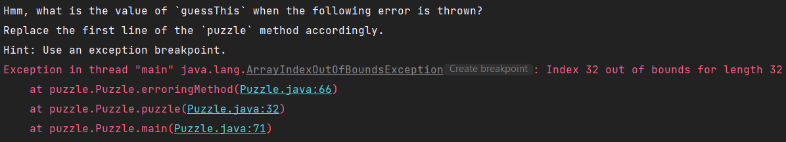
阅读错误消息，看看你能否找到答案！如果你做对了，
Puzzle.java
将不再出错，你应该能通过
tests/puzzle/PuzzleTest
中的
testPuzzle
。
替换
answer.txt
中的值，使
Puzzle
不再出错。
表达式和监视
调试时，你可能不总是把想要检查的值存储在变量中。幸运的是，IntelliJ 为我们提供了解决方案！在某一行暂停后，你可以使用"计算表达式"工具（形状像计算器）。你可以点击计算器图标打开一个全新的窗口，但你也可以直接在调试器中输入表达式：
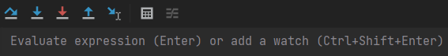
你也可以在表达式工具中使用变量和方法调用！尽管在下面的例子中我们只使用了
Math
库方法，你可以调用任何你想调用的东西。在这里，我们在
Puzzle.java
中使用该工具，初始答案猜测为
973
：
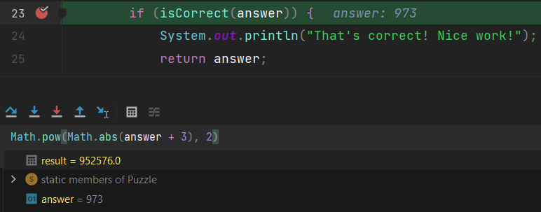
恢复程序后，
result
将丢失。如果你不想丢失它，你可以使用Ctrl+Shift+Enter（Windows）或Cmd+Shift+Enter（Mac）将其添加为
监视
。这将使它在继续执行后仍然保留。此外，监视将随程序相应地改变值，就像普通变量一样！
监视在你停止并重新运行程序后仍然会保留，因此它们对于多次执行的调试非常有用。例如，我把之前的猜测改成了
1717
并完全重新运行了程序，但不需要重新计算表达式，调试器就能告诉我它是什么！
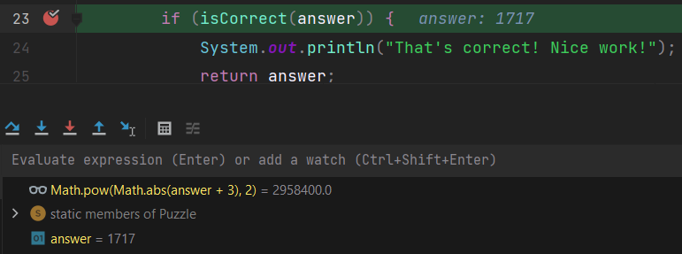
这部分没有相关的练习，但我们认为这是一件值得了解的有用的事情！
恭喜你，你已经完成了实验03！
交付成果和评分
实验满分为5分。Gradescope上没有隐藏测试。如果你在
Adventure
上通过了所有本地测试，你将获得实验的满分（除非你修改了不应该修改的东西）。重申一下，"另一个调试谜题？！"对于本实验是可选的。最终的交付成果是：
-
BeeCountingStage(1.25 pts) -
SpeciesListStage(1.25 pts) -
PalindromeStage(1.25 pts) -
MachineStage(1.25 pts)
提交
就像你之前做的那样，添加、提交，然后将你的实验03代码推送到GitHub。然后，提交到Gradescope来测试你的代码。如果你需要复习，请查看 实验1规范 和 作业工作流指南 中的说明。